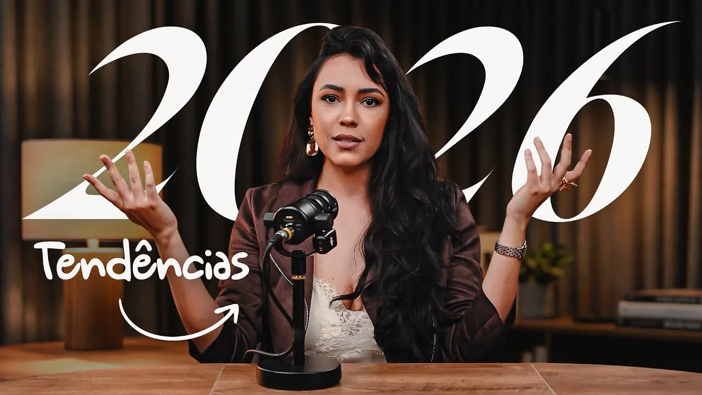

Marca Pessoal
Estratégia de marca pessoal: como avaliar tendências sem seguir todas
Uma estratégia de marca pessoal não precisa incorporar toda novidade que aparece. Precisa de critérios para escolher o que faz sentido diante do trabalho que você realiza, das pessoas que deseja atender e da estrutura que consegue sustentar. Uma tendência pode provocar uma pergunta relevante sem se tornar uma obrigação imediata.
Nicho autoral, comunidade, uso de inteligência artificial e conversas nas redes sociais são temas que merecem esse exame. Em vez de tratá-los como previsões certas, vale transformá-los em decisões verificáveis. O interesse está menos em antecipar o futuro e mais em reconhecer onde sua comunicação e sua entrega podem ficar mais coerentes agora.
Na fonte
Assista ao conteúdo original.

O player do YouTube será carregado somente ao clicar. A conexão com o provedor pode envolver cookies e tratamento de dados. O vídeo não inicia automaticamente.
Abrir vídeo no YouTube ↗Defina um território a partir do que você consegue sustentar
Criar um recorte próprio não significa inventar uma especialidade sem fundamento. Significa combinar repertório, experiência e afinidade com uma necessidade que você consegue atender. O nome desse território só se torna útil quando ajuda o público a entender a contribuição oferecida.
Como exemplo hipotético, uma profissional com experiência em ensino e organização de equipes pode concentrar sua atuação na preparação de materiais de integração. O recorte não nasce apenas de uma expressão atraente. Nasce da capacidade de conectar competências a uma situação concreta de trabalho. Antes de anunciá-lo, ela precisa verificar o problema e os limites da sua intervenção.
Pergunte o que você já sabe fazer, quais situações consegue demonstrar e qual demanda deseja investigar melhor. Evite tanto se prender a formatos prontos quanto presumir que originalidade dispensa validação. Uma combinação particular pode abrir possibilidades, mas precisa ser compreendida e testada na relação com pessoas reais.
Construa comunidade em torno de uma questão compartilhada
Comunidade envolve mais do que reunir seguidores em um canal. É necessário haver um interesse reconhecível, uma razão para conversar e alguma forma de participação. A liderança dá direção a esse encontro, mas não deveria reduzir as pessoas ao papel de plateia permanente.
Defina qual questão aproxima o grupo e que prática ele pretende desenvolver. Como exemplo hipotético, empreendedoras interessadas em tornar seus atendimentos mais organizados podem trocar experiências sobre acordos e comunicação. O ponto comum é o trabalho a melhorar, não a obrigação de pensar da mesma maneira em todos os assuntos.
Um cuidado importante é distinguir oposição a um problema de hostilidade contra pessoas. Você pode questionar práticas confusas sem criar inimigos humanos para sustentar pertencimento. Também estabeleça condições de convivência e considere quanto acompanhamento pode oferecer. Uma comunidade pequena e bem cuidada faz mais sentido para determinada estrutura do que uma expansão sem espaço para escuta.
Relacione o que você mostra ao que efetivamente entrega
Bastidores ajudam quando permitem compreender a atuação profissional. Podem revelar como uma decisão é preparada, como um projeto é acompanhado ou como um princípio aparece no trabalho. Não precisam se apoiar em símbolos de consumo nem apresentar a vida inteira como demonstração de sucesso.
Escolha algo que você pratica e consiga explicar. Mostre a relação entre o procedimento e sua finalidade, sem transformar um episódio em promessa para todas as pessoas. Se o material envolve alguém atendido, considere autorização e normas da atividade. Onde houver restrições, descreva o processo em vez de expor casos identificáveis.
A mesma coerência vale para o desenho dos serviços. Uma entrega que exige atenção próxima precisa de capacidade compatível. Antes de ampliar a procura, observe agenda, preparação e acompanhamento. Trabalhar com maior profundidade não pode significar apenas mudar a apresentação e manter uma operação incapaz de sustentar o que passou a ser comunicado.
Use inteligência artificial sem terceirizar sua posição
Ferramentas podem ajudar a organizar materiais, revisar uma estrutura ou explorar possibilidades de formato. O limite aparece quando passam a produzir uma voz indistinta ou uma imagem incompatível com a realidade. Se tudo poderia pertencer a qualquer outra profissional, vale perguntar onde ficou a sua contribuição.
Como aplicação editorial, comece pela análise que deseja compartilhar e só depois avalie que apoio técnico faz sentido. A ferramenta não deve decidir por você quais convicções expressar nem quais experiências alegar. Revise a precisão do texto, preserve informações confidenciais e descarte representações que possam induzir uma leitura enganosa sobre sua atuação.
Escolha também um formato de conteúdo compatível com sua expressão e sua rotina. Uma boa análise escrita, uma conversa bem conduzida ou uma demonstração objetiva podem servir a propósitos diferentes. Não há necessidade de reproduzir a intensidade de outra pessoa. O formato precisa tornar seu conteúdo compreensível e permitir continuidade sem esconder sua personalidade.
Facilite a passagem da atenção para uma conversa pertinente
Quando alguém demonstra interesse no seu trabalho, a comunicação deve permitir que entenda como prosseguir. Isso exige mais do que publicar materiais educativos em sequência. Exige deixar claro o tipo de demanda que você atende e quais informações ajudam a avaliar uma possível contratação.
Uma conversa profissional começa por compreender, não por presumir adequação. Responda à questão apresentada, esclareça o funcionamento da entrega e indique o próximo passo apenas quando fizer sentido. Não transforme comentário público em autorização para abordagens insistentes. O respeito ao ritmo da outra pessoa faz parte da experiência de marca.
Para priorizar tendências, escolha a mudança que resolve um desencontro atual: território indefinido, grupo sem propósito, bastidor sem relação com a entrega ou interesse sem encaminhamento. Trabalhe nesse ponto antes de acrescentar mais frentes. A estratégia ganha consistência quando cada novidade serve a uma necessidade identificada, em vez de apenas tornar sua rotina mais cheia.
Fonte e nota editorial
Adaptação editorial a partir de conteúdo público de Clara Do Vale. Não representa autoria, revisão ou aval de Clara. Acesse o conteúdo original.
Explore outros artigos do blog.
Para aprofundar esta leitura, explore repertório aplicado às decisões de uma marca premium e consistência de marca sem repetir a mesma comunicação.